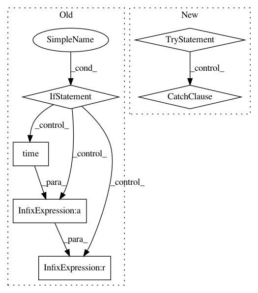

de46464aa3595c0fcb622ceaf2248eb9266e46e8,python/ray/experimental/queue.py,Queue,put,#Queue#Any#Any#Any#,45
Before Change
Raises:
Full if the queue is full and blocking is False.
if self.maxsize <= 0:
self.actor.put.remote(item)
elif not block:
if not ray.get(self.actor.put.remote(item)):
raise Full
elif timeout is None:
// Polling
// Use a not_full condition variable or promise?
while not ray.get(self.actor.put.remote(item)):
// Consider adding time.sleep here
pass
elif timeout < 0:
raise ValueError(""timeout" must be a non-negative number")
else:
endtime = time.time() + timeout
// Polling
// Use a condition variable or switch to promise?
success = False
while not success and time.time() < endtime:
success = ray.get(self.actor.put.remote(item))
if not success:
raise Full
def get(self, block=True, timeout=None):
Gets an item from the queue.
Uses polling if block=True, so there is no guarantee of order if
After Change
ValueError if timeout is negative.
if not block:
try:
ray.get(self.actor.put_nowait.remote(item))
except asyncio.QueueFull:
raise Full
else:
if timeout is not None and timeout < 0:
raise ValueError(""timeout" must be a non-negative number")
else:
In pattern: SUPERPATTERN
Frequency: 3
Non-data size: 6
Instances
Project Name: ray-project/ray
Commit Name: de46464aa3595c0fcb622ceaf2248eb9266e46e8
Time: 2020-08-19
Author: architkulkarni@users.noreply.github.com
File Name: python/ray/experimental/queue.py
Class Name: Queue
Method Name: put
Project Name: pantsbuild/pants
Commit Name: 73e25e7454f4d20be3513db3e6357efdc2425638
Time: 2015-08-31
Author: kwilson@twopensource.com
File Name: src/python/pants/pantsd/process_manager.py
Class Name: ProcessManager
Method Name: _wait_for_file
Project Name: ray-project/ray
Commit Name: de46464aa3595c0fcb622ceaf2248eb9266e46e8
Time: 2020-08-19
Author: architkulkarni@users.noreply.github.com
File Name: python/ray/experimental/queue.py
Class Name: Queue
Method Name: get